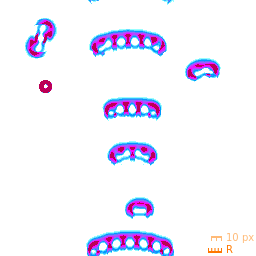

Lenia taxonomy and diversity

Several patterns running at one point in rule space (Scutiform compilation from
Bert Chan's javascript demo
)
Points in Lenia rule space
can
support multiple patterns, but typically only one or a few.
... but this is a far cry from the diversity in Life-like rules (especially Life).
Previous
--
Table of Contents
--
Next